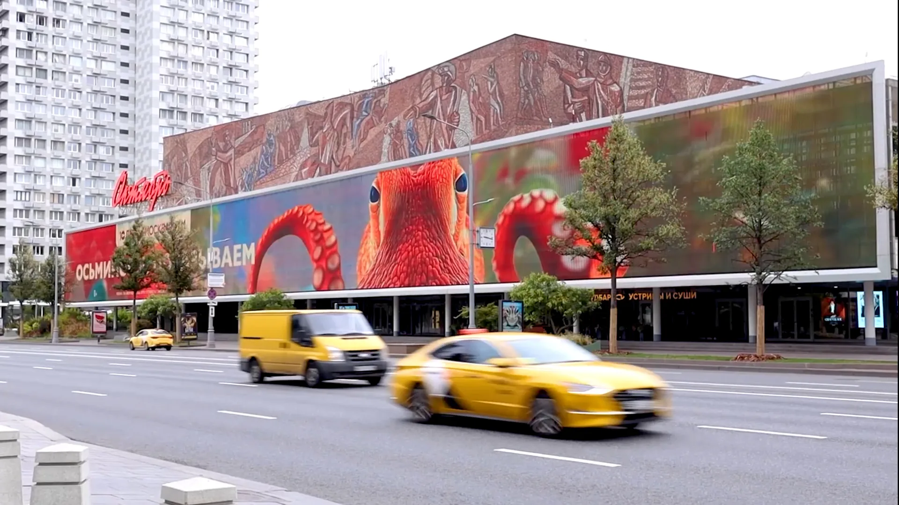

Мем как точка входа
«Рыбов знаете?» — интернет-мем с миллионами просмотров. Задача была не эксплуатировать цитату, а перехватить её энергию. «Показываем» переворачивает логику: Москвариум не ждёт гостей — он сам выходит в город. Каждый обитатель получает слоган и персонаж: нерп, осьминог, черепаха, хамелеон.
OOH-охват:более 19 млрдЦА:20–29 лет